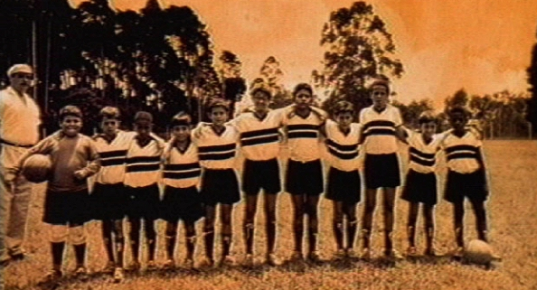

Responder a este comentário
A Espera do Óscar
por Giba Assis Brasil em 19 de setembro de 2008Em 2001, o filme "Uma História de futebol", com direção de Paulo Machline e roteiro de José Roberto Torero e Maurício Arruda (*), foi indicado ao Óscar de curta-metragem de ficção. Foi a única vez até hoje em que um filme brasileiro foi finalista naquela categoria. Em 21 minutos, "Uma História de futebol" contava as memórias de um empresário aposentado que, na infância, tinha jogado bola ao lado de um menino muito talentoso que ainda não atendia pelo nome de Pelé.
Uns dias antes da cerimônia, que aconteceria a 25 de março de 2001, o Roger Lerina pediu que eu escrevesse alguma coisa para ser publicada em Zero Hora caso o curta brasileiro fosse vencedor. Como isso terminou não acontecendo - a Academia preferiu a produção mexicana "Quiero ser", dirigida pelo alemão Florian Gallenberger - meu texto permaneceu inédito.
Sete anos depois, o Óscar voltou a ser assunto pra mim: o Secretário do Audiovisual Sílvio Da-Rin me convidou para fazer parte da Comissão que escolheria o filme brasileiro a ser indicado como possível "melhor filme estrangeiro" (ou seja, de língua não inglesa) na premiação do ano que vem. Eu aceitei, a Comissão cumpriu seu papel e o filme "Última parada 174" foi o indicado - mas isso fica pra depois.
Relendo agora o texto de 2001, ele me parece (é claro) bastante datado, mas algumas idéias sobre cinema e festas permanecem, ao menos na minha cabeça. E acho que quem veio até aqui não vai se incomodar de ler quatro parágrafos que eram para ter sido, uma celebração que não foi, um registro do que não chegou a acontecer.
(*) Eu tinha esquecido o nome do Maurício Arruda, também roteirista do filme. Agradeço a correção feita pelo próprio Maurício.
**********************
(25/03/2001)
Desde os anos 70, os cineastas brasileiros realizaram mais de 3 mil filmes de curta metragem. Destes, provavelmente perto de mil podem ser considerados bons filmes, mais de trezentos são excelentes e pelo menos cem foram premiados em festivais internacionais. Não arrisco estimar o número de obras-primas porque o próprio conceito de obra-prima precisa de uma certa distância para ser corretamente contemplado.
Desde os anos 70 os cineastas brasileiros tentam mostrar estes filmes ao seu público. A chamada "Lei do Curta", criada em 1974, implantada em 1977, reformulada em 1985 e inviabilizada por Collor em 1990, foi e continua sendo o grande marco desta batalha para tornar visível uma parte da produção audiovisual do Brasil, que muitos freqüentadores de festivais entendem como a mais rica e inovadora, e que certamente é a mais descentralizada e democrática: curtas são realizados a cada ano em todos os cantos do país, fazendo surgir novos realizadores, novos técnicos, novas equipes de produção.
Iniciativas como o "Curta nas telas", da Prefeitura de Porto Alegre (que completa 5 anos em setembro), e o "Curta na TV", da RBS (que exibiu 38 filmes no ano passado) colocam os gaúchos na linha de frente, não apenas como realizadores de alguns dos melhores curtas brasileiros das últimas décadas, mas também como viabilizadores de alternativas para que o curta cumpra a sua função social: chegar ao grande público, mostrar ao país algumas de suas múltiplas caras.
Que o Óscar, do alto da sua breguice midiática e irrelevância cultural, tenha, pela primeira vez em sua longa história, alguma utilidade para a cultura brasileira. Que o merecido prêmio a Paulo Machline e a "Uma História de futebol" seja (antropofagicamente, conforme Oswald) um instrumento de aproximação entre o curta brasileiro e o seu público: o brasileiro - tu, leitor, espectador.

"Uma História de futebol" (2001) é até hoje o único curta brasileiro indicado ao Óscar.
{kind=link}
TEM MAIS:
"Uma História de futebol" no Porta Curtas Petrobrás.
A mesma história gerou também um livro infanto-juvenil de José Roberto Torero.
Pra quem se interessa, resultados do Óscar 2001 no portal Terra.